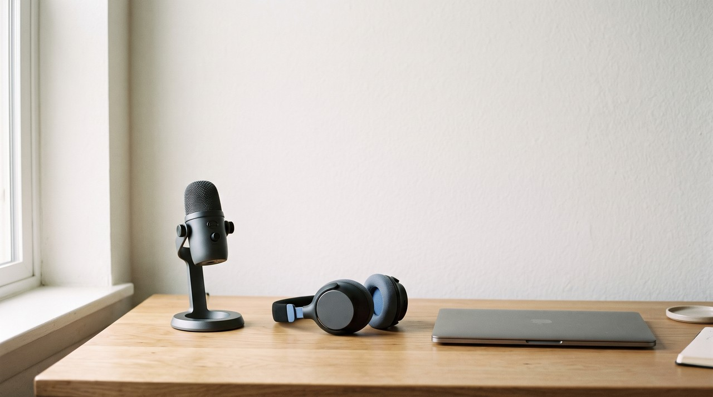
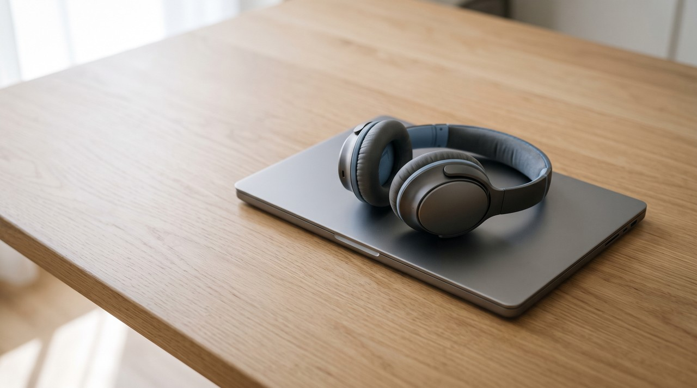

Real-Time Voice Cloning: what the famous GitHub project really does, and what to use in 2026

Real-Time Voice Cloning is a free GitHub project from 2019 that takes a few seconds of recorded audio, creates a clone of that voice, and reads out whatever text you type into it. The name is a bit misleading because real time here only means the final step produces audio quickly, so it will not change your actual voice live while you speak on a call. The creator put a note in the README explaining that the code is quite old now. If you want to change your voice live on a stream, you need an engine like RVC, and if you want clean voiceovers, you need a modern text to speech tool instead.
| Real-Time Voice Cloning (GitHub) | RVC voice changer | VoiceClone | |
|---|---|---|---|
| What goes in | Typed text plus a few seconds of a voice | Your live voice from the microphone | Typed text plus 1 to 3 minutes of your voice |
| Live while you talk | No | Yes, 170 ms end to end, 90 ms with ASIO devices | No |
| Training needed | No, it uses ready models | Yes, 10 minutes or more of clean speech recommended | Optional, one button on your PC |
| Age of the method | SV2TTS, a 2018 research paper | Current, still updated | GPT-SoVITS, current |
| Cost | Free | Free | One voice cloned and trained free, then $49 once |
| Best for | Learning how voice cloning works | Calls, streams and games | Videos, narration and voiceovers |
Written by Inam. I build VoiceClone, a text to speech cloner for Windows, so I am not neutral about the last column. My other engineering notes are on designesh.com. Last updated 9 October 2026.
When you search for real time voice cloning, you are usually looking for a quick way to get a cloned voice working right now. You might want to speak on a call or a stream using a different voice, or maybe you just want a clear voiceover without spending hours training a model first. The top search result is almost always a GitHub project with that exact title and roughly 60,000 stars, so it seems like the right choice at first glance.
The famous Real-Time Voice Cloning project reads typed text in a copied voice, and it does not change your voice live while you talk. The real time label simply describes how fast the final stage converts the data into sound. If you need a live voice changer for calls, you will need a completely different tool, and if you are making voiceovers, newer engines sound far more natural.
What is the Real-Time Voice Cloning project on GitHub?
This whole project comes from the Real-Time Voice Cloning repository built by Corentin Jemine for his master's thesis. He created the page on 26 May 2019, and when I checked it on 9 October 2026, it had reached 60,171 stars. Its main line says it can clone a voice from 5 seconds of audio to generate speech in real time, which is why so many people end up clicking on it.
The tool costs nothing and runs locally on your own computer hardware. The documentation mentions support for both Windows and Linux, and you need ffmpeg installed so the software can process your audio files properly. These days you install it using a Python package manager called uv, and the author gives one command for setups with an NVIDIA graphics card and another command for basic setups without one.
What does "real time" mean in Real-Time Voice Cloning?
Under the hood, it uses an algorithm called SV2TTS, which comes from a 2018 research paper about cloning voices for text to speech systems. The process works across three steps. First, the encoder listens to a short voice sample and turns it into a unique digital fingerprint. Next, the synthesizer takes your text and plans how those words should sound using that fingerprint. Finally, the vocoder translates that sound plan into the actual audio file you hear.
The documentation states that the vocoder works in real-time. In technical terms, that just means the computer generates the sound at about the same speed as normal human speech, which was a big step forward back in 2019. It does not mean you can speak into a microphone and hear another voice instantly. You still have to type out the words line by line, and the software reads them back to you.

Is Real-Time Voice Cloning still worth using in 2026?
The developer says this clearly on the main page. He added a dedicated Heads up note pointing out that the codebase has gotten old, and he noted that many paid apps give better audio quality today. He points people toward newer open source work instead, naming a project called Chatterbox as a similar project that is up to date.
I think his assessment is spot on, and I say that with full respect because this exact project helped me and many others understand how digital voice cloning works. Using only a few seconds of audio is also part of the reason the final output sounds less like the real person. A quick 5 second sample captures the basic tone of a speaker, but it misses the accent, speech pacing, and small vocal habits that make a voice unique. Use it to learn how cloning works, but do not expect a voice you can publish.
What do you need for a live voice on a call or a stream?
If you need a live voice during a call, you are looking for speech to speech conversion rather than text to speech. You speak directly into your microphone, the software swaps your voice for the cloned one as you talk, and it routes that new voice to your game or meeting software. The most popular open source engine for this job is RVC. According to its English README, the processing delay gets down to 170 ms, or around 90 ms if you use dedicated ASIO audio drivers, which are the low latency drivers that musicians use.
A popular interface for live conversion is VCClient by w-okada, which runs both RVC and Beatrice voice models. It supports Windows, Mac M1, and Linux systems, and it lets you run the processing on your main PC or offload it to another machine on your local network. Offloading the work to a second computer is helpful when your main graphics card is already busy running a heavy game.
The main trade off is that a live voice changer needs a fully trained model of the target voice before you can start speaking. The RVC project recommends feeding the system at least 10 minutes of clean, clear audio for training. You also have to say every single word yourself, meaning your own speaking rhythm and emotion stay in the recording while only the vocal tone changes. I broke down these differences step by step in my article on RVC vs GPT-SoVITS.
What should you use for videos, narration and voiceovers?
When your goal is to record voiceovers for videos and narration, you do not need live microphone conversion at all. What you need is a modern text to speech engine where you enter a written script and output clean speech files. Current software in this category is far ahead of the older 2019 method because it learns from more of the voice and keeps more of its accent and rhythm.
This exact problem is why I developed my desktop tool, VoiceClone. It is a Windows app built for Windows 10 and 11 that runs the GPT-SoVITS engine locally on your system, so your private voice recordings never leave your machine or upload to cloud servers. You record a 1 to 3 minute reference clip, the app checks the quality, and it builds a usable voice profile immediately. You can then click the Make it perfect option to run full training on your own hardware, which is much faster on NVIDIA cards and still works on regular processors, just taking a bit more time.
I prefer to be completely open about what my tools cannot do. VoiceClone is not a live microphone changer, so you cannot use it to talk in real time on a phone call or a stream. It supports English only and it cannot handle singing voices. The free version allows you to clone and fully train one custom voice and generate 3 test samples, while the $49 one time license opens unlimited text lengths, the built-in word editor, voice retraining, and full file exports without any monthly subscription. You can check it out on the main download page.
Is live voice cloning legal and safe to use?
The underlying software tools are legal to use, but how people choose to use them is where legal problems can happen. Live voice changers are sometimes misused in telephone scams where someone mimics a family member or a business manager. The core rule I include with VoiceClone applies across the board: only clone your own voice, or a voice where you have explicit permission from the owner.
Whenever you share an audio clip or make a call where people might mistake the AI voice for a real person, you should clearly state that the voice was generated by software. I covered these legal aspects in detail in my piece on Is voice cloning legal.
FAQ
Is Real-Time Voice Cloning a live voice changer?
No, it is not a live voice changer. It is a text to speech program where you type out words and the software reads them using a copied voice profile. The real time label in its title simply means the vocoder generates output audio quickly without long processing delays.
How many seconds of audio does Real-Time Voice Cloning need?
The project summary mentions 5 seconds, and the documentation notes that the encoder can work with a short audio clip. While a clip that short is enough to capture basic vocal pitch, it is too short to capture the unique accent, pacing, and speech patterns needed for a convincing voice clone.
What is the best free real time AI voice changer?
For live microphone conversion, the most widely used open source engine is RVC, and VCClient by w-okada gives you a simple interface to run it. RVC offers latency down to 170 ms on standard setups or 90 ms when using low latency ASIO drivers. You will need to train a voice model first, which needs 10 minutes or more of clean voice recordings.
Can VoiceClone change my voice in real time?
No, VoiceClone cannot do that. It is a text to speech tool designed for generating audio from written scripts, making it useful for video narration and voiceover work. If you need live voice changing for phone calls or gaming streams, an engine like RVC is the right choice for that task.
Sources: the Real-Time Voice Cloning README and repository data on GitHub, read on 9 October 2026, the SV2TTS paper on arXiv, the RVC English README, the VCClient README by w-okada, and the VoiceClone product page on myvoiceclones.com.
Hear your own voice come back.
The free Windows app clones and fully trains one voice, yours, on your own PC. No account, no upload, and the download starts right away.